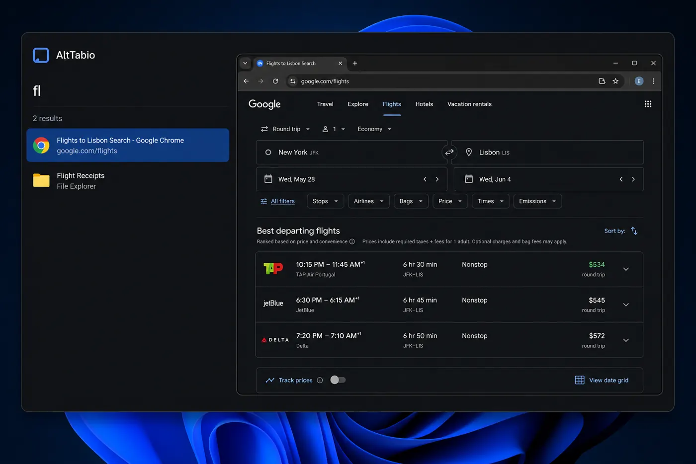
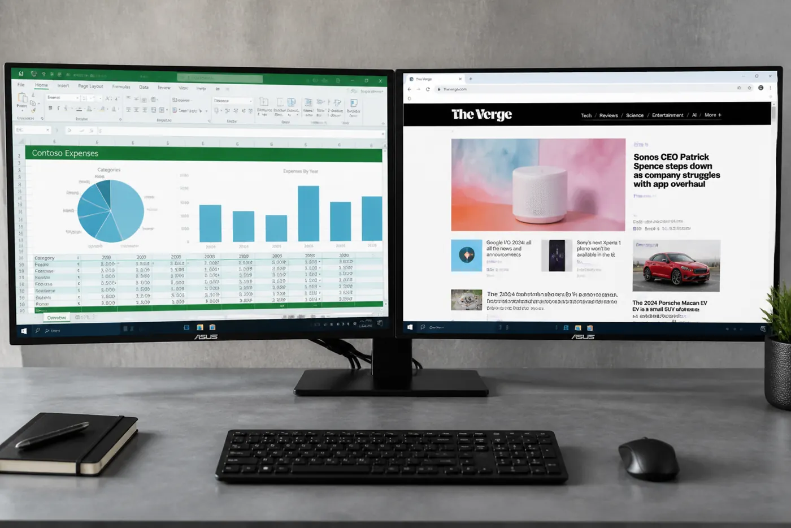

Alt+Tab replacement for Windows
See the real window. Then switch.
A free, open-source Alt+Tab replacement for Windows 10 and 11. Numbered list, live preview, search as you type.
A–Z search 1–9 jump Enter switch

Hold Alt, tap Tab. Same habit, clearer overlay.
Windows still shows a strip of tiny thumbnails. AltTabio keeps the shortcut and gives you a list you can read, with a live preview of the selected window.

Type to find it
Start typing. A few letters is enough. The list shrinks to matching titles and app names.
Great with two screens
Limit the list to the monitor you are looking at, or keep every window in one place.

Or press a number
Visible windows get keys 1 through 9. The ones you use most become one keystroke.
Close a stuck program
Close, minimize, maximize, restore, or force-close from the list. No Task Manager hunt.
The keys you already use
Five shortcuts cover almost everything. The rest are there if you want them.
Show every shortcut
Make it feel like yours
Eight icon colors, light or dark, compact or roomy. These swatches are the colors that ship in the app.
- Compact or roomy list
- Bigger icons, window numbers, and app names, all optional
- Preview one window, or see it on the full desktop
Azure, the default
No network. No account. No ads.
No trial that expires. No pro version held hostage. A small native program that does one job.
Completely private
AltTabio never connects to the internet. No data leaves your computer, because the app cannot send any. Settings live in a local INI file.
About the permission prompt
Windows asks for permission so AltTabio can handle Alt+Tab first, and so it can close a frozen program when you ask. Needed for the job, not for anything sneaky.
Changed your mind?
It lives in one folder. Delete the folder and it is gone. Exit from the tray icon and the built-in Alt+Tab comes back immediately.
- License
- MIT. Source code is public on GitHub.
- Platform
- 64-bit Windows 10 and Windows 11
- Stack
- Native Rust, Win32, Direct2D, DWM previews
Up and running in a minute
One executable. No installer wizard, no store account, no extra runtime.
Download
Get the latest Windows archive from GitHub Releases. It is a small zip, nothing else to install.
Place
Unzip it into a folder you will keep. Documents works. If you enable start with Windows, prefer a folder only administrators can write, such as Program Files.
Run
Open AltTabio.exe, click Yes on the Windows prompt, then press Alt+Tab.
Questions
Is it really free? What is the catch?
There isn’t one. AltTabio is free, open-source software under the MIT license. No trial, no ads, no account, no premium version.
Will it slow down my computer?
No. It is a single small native program, and it sits quietly until you press Alt+Tab. There is no background syncing or phoning home, because it has no internet connection.
Does it collect any of my data?
None. AltTabio contains no analytics and no networking. It could not send your data anywhere even if it wanted to. Anyone can verify that in the public source.
Why does Windows ask for permission when it starts?
That approval lets AltTabio respond to Alt+Tab before Windows does, and lets it close a frozen program when you ask. Those are the only reasons.
What if I want the old Alt+Tab back?
Right-click the AltTabio icon in the system tray and choose Exit. Windows goes back to normal. You can also keep AltTabio on Alt+Tab and leave Win+Tab alone, or the other way around.
How do I uninstall it?
Turn off start with Windows if you enabled it, exit from the tray icon, and delete the folder. That is everything.
Which computers does it work on?
Any modern 64-bit Windows PC, including Windows 10 and Windows 11. Multiple monitors and high-resolution displays are supported.
Is this an Alt+Tab Terminator alternative?
Yes. AltTabio is an independent open-source window switcher for people who want that kind of list-and-preview Alt+Tab on Windows. It is not affiliated with Alt+Tab Terminator.
Your windows, found. Every time.
It takes a minute to try, and nothing to undo.
Free for 64-bit Windows. MIT licensed.